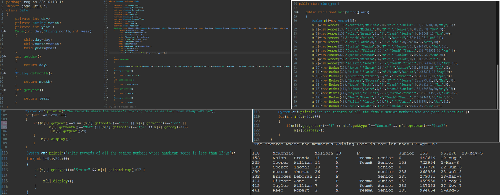
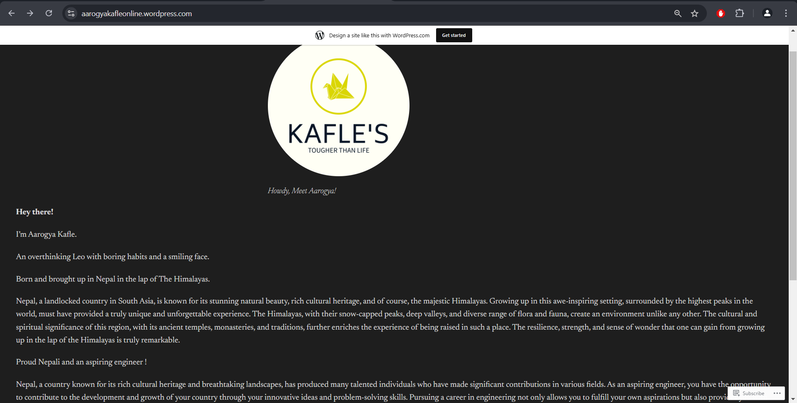
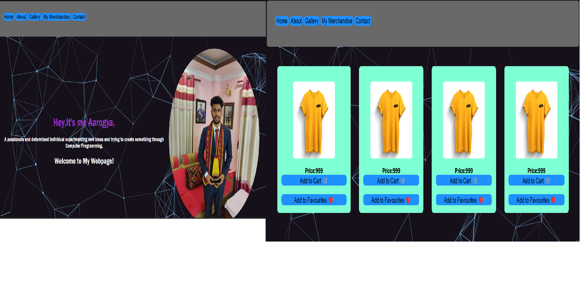

Project 1

A basic database management system for a golf club using Object Oriented Programming principles in Java.
The project involves creating classes with appropriate attributes and methods to handle member data effectively.
This project demonstrates the application of object-oriented programming techniques in Java to manage and manipulate
a database of golf club members. The use of classes, objects, and array data structures allows for effective handling
and display of member information based on defined criteria.
Link to the Project: Project 1
Project 2

Designing a simple website using WordPress is an accessible and efficient way to establish an online presence.
With its user-friendly interface and a vast selection of themes and plugins, WordPress allows users to create
visually appealing sites without extensive coding knowledge. You can easily customize your website by choosing
a theme that aligns with your brand, adding essential plugins for functionality, and organizing content through
intuitive menus and widgets. The drag-and-drop editor simplifies the design process, enabling you to arrange elements
effortlessly. Overall, WordPress empowers individuals and businesses alike to build a professional-looking website
quickly and with minimal effort.My website features a simple list of links to various notes of different subjects.
Link to the Project:
Project 2
Project 3

Home Page:
HTML: The website uses <nav> for the navigation bar, <header> for the main heading and information about the website owner, and <main> for the main content.
CSS: The website uses CSS for styling the elements. The background image and color are set using background-image and background-color properties. The text and images are styled using various CSS properties.
Merchandise Page:
HTML: The merchandise page is likely to use <div> elements to create the product cards, <img> for the product images, <p> for the product descriptions, and <button> for the "Add to Cart" and "Add to Favourites" buttons.
CSS: The merchandise page is likely to use CSS for layout and styling. The product cards could be styled using flexbox or grid for better visual organization. The buttons may have specific styling with background-color, border, and font-weight properties.
Link to the Project: Project 3